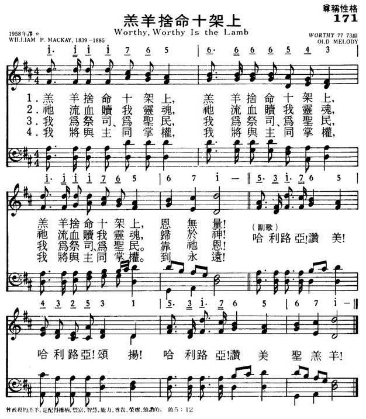

|
|
颂主新歌 |
|
1 Worthy, worthy, is the Lamb, Chorus: 2 Saviour, let thy kingdom come! 3 Thus may we each moment feel, |
1.羔羊舍命十架上，羔羊舍命十架上，
|
|
https://www.mred365.cn/szxg/7174.html 
|
|
|
|
|


"Worthy, Worthy Is the Lamb" - Hymn 246 https://youtu.be/981vwOlb3z4
| Text: | Worthy is the Lamb! |
| Author: | W. P. Mackay |
| Tune: | WORTHY |
| Short Name: | W. P. Mackay |
| Full Name: | Mackay, W. P. (William Paton), 1839-1885 |
| Birth Year: | 1839 |
| Death Year: | 1885 |
Mackay, William Paton,
M.D., was born at Montrose, May 13, 1839, and educated at the University of Edinburgh. After following his medical profession for a time, he became minister of Prospect Street Presbyterian Church, Hull, in 1868, and died from an accident, at Portree, Aug. 22, 1885. Seventeen of his hymns are in W. Reid's Praise Book, 1872. Of these the best known is "We praise Thee, O God, for the Son of Thy love" (Praise to God), written 1863, recast 1867. [Rev. James Mearns, M.A.]
--John Julian, Dictionary of Hymnology, Appendix II (1907)
======================
Born: May 13, 1839,
Montrose, Scotland.
Died: August 22, 1885, Portree, Scotland, of an accident.
Mackay graduated from the University of Edinburgh and initially worked as a doctor. However, he was ordained, and in 1868 became pastor of the Prospect Street Presbyterian Church in Hull. He married Mary Loughton Livingstone 1868 in Kingston Upon Hull, Yorkshire; they were living in Sculcoates, Yorkshire, as of 1881. Seventeen of his hymns appeared in W. Reid’s Praise Book in 1872.
Tune Information
| Title: | [Worthy, worthy is the Lamb] |
| Composer: | William Paton Mackay, 1839-1885 |
| Incipit: | 11117 65666 65431 |
| Key: | D Major |
| Copyright: | Public Domain |